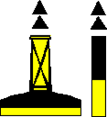
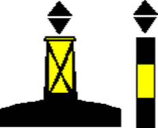
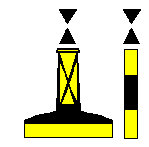
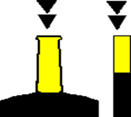
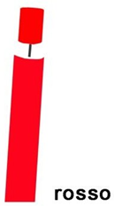
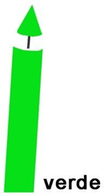
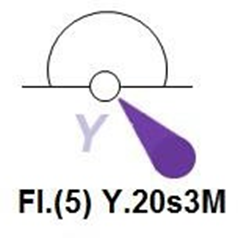

Tabella sanzioni amministrative
Riepilogo delle sanzioni pecuniarie presenti nelle domande d'esame. Le risposte false tendono ad avere importi minimi molto più bassi (206 €, 250 €, 276 €…) o massimi diversi: confrontare sempre la fascia completa.
| Infrazione |
Sanzione |
Note |
| Eccesso di velocità negli specchi d'acqua portuali |
414 – 2.066 € |
|
| Eccesso di velocità nelle zone balneari |
414 – 2.066 € |
|
| Urto senza fornire le proprie generalità / notizie di identificazione alle altre unità coinvolte |
1.032 – 6.197 € |
Solo il comandante è soggetto a questa sanzione |
| Omissione di assistenza o mancato tentativo di salvataggio (obbligo da Codice della Navigazione) |
Reclusione fino a 2 anni |
Sanzione penale (non amministrativa) |
| Guida in stato di ebbrezza |
2.755 – 15.000 € |
Importo variabile in base al tasso alcolemico rilevato |
| Guida sotto effetto di sostanze stupefacenti o psicotrope |
2.755 – 11.017 € |
|
| Comando di unità senza aver conseguito la patente prescritta |
2.755 – 11.017 € |
+ sospensione della licenza di navigazione per 30 giorni |
| Esercizio abusivo di attività commerciali con unità da diporto |
2.755 – 11.017 € |
|
¹ Nel dataset compaiono due importi minimi leggermente diversi per l'attività commerciale abusiva (2.755 € e 2.775 €): entrambi sono presenti nelle domande d'esame.
Normativa e Patente Nautica
Obblighi del comandante
- Denuncia di evento straordinario: spetta solo al comandante, da presentare all'autorità marittima o consolare entro 3 giorni dall'evento.
- Urto: il comandante deve fornire le notizie di identificazione dell'imbarcazione nei limiti del possibile. Omissione → sanzione amministrativa (vedi tabella).
- Omissione di assistenza: chi omette di prestare assistenza o tentare il salvataggio nei casi prescritti dal Codice della Navigazione → reclusione fino a 2 anni.
Classificazione delle unità da diporto
- Le unità da diporto sono classificate in base alla sola lunghezza fuori tutto.
- Navigazione da diporto: effettuata a scopo sportivo, ricreativo o commerciale (Codice della nautica da diporto).
Motore – potenza e patente
- Conversione kW → CV: moltiplica per 1,36. Es.: 30 kW × 1,36 = 40 CV. Mnemonic: AMICI.
- La patente è obbligatoria anche con meno di 40 CV se il motore supera:
- > 1.300 cc (motori 4 tempi)
- > 1.000 cc iniezione diretta
- qualsiasi cilindrata se fuoribordo → ricorda: fuoribordo con 1.000 cc!
- Dichiarazione di potenza (non "libretto del motore"): obbligatoria per i natanti da diporto e per le imbarcazioni con motore fuoribordo. Non per tutte le unità a motore.
Patente nautica – validità e sospensione
- Rinnovo ogni 10 anni; ogni 5 anni se il titolare ha più di 60 anni.
- Sospensione: solo per guida in stato di ebbrezza / sotto droghe o gravi atti di imperizia / imprudenza. Non per patente scaduta.
Moto d'acqua
- Può superare la velocità minima solo:
- oltre 1.000 m dalla costa ordinaria
- oltre 500 m dalle coste a picco
Locazione e noleggio
- Locazione: prendi la barca in autonomia (senza skipper). Il conduttore è responsabile.
- Noleggio: la barca rimane nella disponibilità del proprietario/armatore (noleggiante) con il proprio equipaggio. C'è lo skipper.
- L'utilizzo commerciale risulta dalla licenza di navigazione — non dal registro delle imprese.
Documenti tecnici
- Dichiarazione di potenza: documento che riporta le caratteristiche del motore di un natante. Non il "libretto del motore".
- Manuale del proprietario: contiene i dati tecnici del natante omologato CE.
- Marcatura CE: obbligatoria per unità da 2,5 m a 24 m immesse in commercio dopo il 16/06/1998.
- Un natante omologato CE può navigare entro 12 miglia dalla costa se omologato per navigazione senza limiti — le dotazioni non c'entrano.
Fonti normative
- Il Codice della nautica è completato dal Regolamento di attuazione al codice della nautica.
- Per quanto non previsto dal Codice della nautica, si applicano le disposizioni del Codice della navigazione.
Acque territoriali e linee di base
- Linee di base: segnano il limite interno da cui si misura la fascia di mare territoriale.
- Acque interne marittime: acque tra la costa e la linea di base.
Limiti di navigazione per tipo di unità
- Unità a remi (pedalò, sandolini, ecc.): max 1 miglio dalla costa.
- Battello di servizio (tender): max 1 miglio dalla costa, oppure in presenza dell'unità madre. Non ha obbligo di dotazioni di sicurezza, salvo i mezzi di salvataggio individuali.
Categorie di progettazione (forza vento massima)
| Categoria | Forza vento max (Beaufort) | Primo certificato | Rinnovi successivi |
|---|
| A | – | 8 anni dall'immatricolazione | ogni 5 anni |
| B | 8 | 8 anni dall'immatricolazione | ogni 5 anni |
| C | 6 | 10 anni dall'immatricolazione | ogni 5 anni |
| D | 4 | 10 anni dall'immatricolazione | ogni 5 anni |
B→8, C→6, D→4. A e B (altura) = 8 anni. C e D (costiera/litoranea) = 10 anni. Tutti i rinnovi: 5 anni.
Abilitazioni e licenze VHF
| Tipo unità | Documento abilitante VHF | Abilitazione operatore |
|---|
| Imbarcazione / nave da diporto | Nominativo internazionale | Certificato limitato di radiotelefonista per naviglio minore |
| Natante da diporto | Indicativo di chiamata | – |
Sicurezza a bordo – Classi di Incendio
| Classe | Causa | Estinguente consigliato |
|---|
| A | Solidi (legno, tessuti, vetroresina) | Acqua, schiuma, polvere |
| B | Liquidi infiammabili (benzina, oli, vernici) | Schiuma, polvere, CO₂ |
| C | Gas infiammabili (es. bombola GPL) | Polvere, CO₂ — mai acqua |
| D | Metalli combustibili | Estintori specifici per metalli |
| E | Apparecchiature elettriche in tensione | CO₂, polvere — MAI acqua o schiuma |
A→B→C = solido → liquido → gas (dallo stato più stabile al più volatile). E di Elettrico.
⚡ Classe E (elettrico): vietate acqua E schiuma — la schiuma conduce corrente esattamente come l'acqua. Solo CO₂ o polvere.
COLREG – Fanali e Segnali Diurni
Navi a motore
- Nave >50 m: obbligo di un secondo fanale bianco in testa d'albero (settore 225°), posto più alto del primo.
- Nave a cuscino d'aria non dislocante: fanale giallo lampeggiante aggiuntivo. Se è dislocante → fanali normali.
- Rimorchio: sia rimorchiatrice che rimorchiata portano fanali normali. Solo se il cavo di rimorchio supera 200 m la rimorchiatrice aggiunge fanali supplementari.
Unità a vela
- Vela >20 m: bastano solo i fanali laterali + poppa. Il fanale in testa d'albero (bicolorato) non è obbligatorio.
- Vela <7 m (o a motore entro 3 miglia): può usare anche solo una torcia elettrica.
- Vela che va a motore: accende il fanale in testa d'albero. Di giorno: espone un triangolo con punta in giù.
- Fanale bicolorato verde+rosso (in un'unica lanterna): consentito anche su imbarcazioni a motore <20 m.
- Fanali ripetitori (laterali in testa d'albero): visibilità 360°. Per la vela non sono obbligatori.
- Fanali di navigazione obbligatori per unità da diporto oltre 1 miglio dalla costa.
Pesca
- Pesca a strascico (diurno): bicono con VERTICI UNITI. Di notte: fanali bianco (alto) + verde (basso) in testa.
- Pesca non a strascico (diurno): bicono con BASI UNITE. Di notte: bianco (alto) + rosso (basso) in testa.
Se le attrezzature si estendono per più di 150 m: aggiungere un cono con vertice verso l'alto dalla parte dell'attrezzatura. Di notte un fanale bianco aggiuntivo (non serve sapere la direzione — ricorda solo i 150 m).
- Nave da pesca ferma senza abbrivio: mostra solo i fanali in testa d'albero (bianco+verde o bianco+rosso). Nient'altro.
Nave all'ancora
- Di giorno: pallone nero.
- Di notte: luce bianca 360° visibile da ogni direzione.
- Se >50 m: anche una seconda luce bianca più bassa, a poppa.
Regole speciali
- Canale di Messina: le barche a vela non devono intralciare le navi a propulsione meccanica che seguono lo schema di separazione del traffico.
- Barca <12 m: qualsiasi strumento in grado di produrre un suono è sufficiente (no obbligo di tromba/campana specifiche).
Precedenze tra barche a vela
- Mure diverse: chi ha le mure a dritta ha la precedenza.
- Stesse mure: la barca sottovento ha la precedenza.
COLREG – Segnali Acustici
Manovre in vista reciproca
1 fischio breveAccosto a dritta
2 fischi breviAccosto a sinistra
2 prolungati + 1 breveSorpasso a dritta dell'altro
2 prolungati + 2 breviSorpasso a sinistra dell'altro
Per il sorpasso: prima 2 fischi prolungati (avviso), poi 1 o 2 brevi per indicare il lato.
Nebbia / scarsa visibilità
1 prolungato (≤2 min)Nave in navigazione con abbrivio. Ricorda: basta 1 prolungato!
1 prolungato + 2 brevi (≤2 min)Nave a vela (o che non governa / manovra limitata / pesca / rimorchio)
2 prolungati ~2s (≤2 min)Nave ferma senza abbrivio o che non governa
Campana 5s (≤1 min)Nave alla fonda. Ricorda: solo la campana!
Suono continuoSegnale di pericolo
Ferma / non governa → 222! (2 suoni prolungati con ~2 s di intervallo)
Segnalamento Marittimo – AISM / IALA
Terminologia delle luci
- Fase: ogni singolo elemento che compone un ciclo di luce ritmica (un lampo, un'eclissi).
- Periodo: durata totale di un ciclo completo (dalla prima fase alla stessa fase successiva).
- Fl (inglese) = lampo — non lampeggiante.
- Oc (inglese, Occulted) = luce intermittente in italiano — non "occultata".
- ISO: durata della luce = durata dell'eclissi. Ricorda: ISO = isometrico = uguale.
- Sulla carta nautica è riportata la portata nominale.
Esempio: "Oc (3) W 5s" = luce bianca intermittente, 3 eclissi per ciclo, periodo 5 secondi.
Portate
| Portata | Definizione | Ricorda |
|---|
| Nominale | Calcolata con visibilità meteo standard (10 mn). È quella scritta in carta. | → Carta nautica |
| Luminosa | Dipende dall'intensità della sorgente. Espressa in candele (cd). | → Candele |
| Geografica | Limite fisso dato dalla curvatura terrestre (dipende dall'altezza del faro e dell'osservatore). | → Curvatura |
Fari e fanali differiscono per portata nominale.
Tipi di segnalamento
| Tipo | Colore / Luce | Miraglio | Ricorda |
|---|
| Acque sicure | Bianca — isofase, intermittente, lampi lunghi o lettera A Morse | 1 sfera rossa (non due!) | ALFA di Acque sicure |
| Pericolo isolato | Bianca a lampi (luce < eclissi) | 2 sfere nere sovrapposte | Lampi = pericolo isolato |
| Laterale sinistra (zona A) | Rossa | Cilindrico | Rosso = cilindrico (come una lattina) |
| Laterale destra (zona A) | Verde | Conico | Verde = conico (come il gelato!) |
| Cardinale | Bianca (ritmo diverso per N/E/S/O) | 2 coni neri+gialli | Il nero è dove puntano le frecce |
Segnale laterale = indica da quale lato della nave lasciare il segnale, secondo il senso convenzionale.
Settore rosso in carta → navigazione consentita ma prestare attenzione a un pericolo in quel settore.
Segnali cardinali – dove sta il nero
I miraglia sono sempre 2 coni. Il nero sta dove puntano i vertici dei coni:

Nord – passa a Nord
Nero in alto

Est – passa a Est
Nero a metà (clessidra)

Ovest – passa a Ovest
Nero a metà (bassa)

Sud – passa a Sud
Nero in basso
Segnali laterali

Sinistra (zona A)
Rosso · Cilindrico

Destra (zona A)
Verde · Conico
Forme di segnalamento

Forma sferica
(acque sicure)
Meda e gavitello
- Meda: fissata al fondo del mare (permanente).
- Gavitello: di solito romboidale, non fissato al fondo, temporaneo.
Simboli sulla carta nautica
- Bell → campana
- Racon → radar a corno (risponditore radar)
- Le scritte sulla carta nautica sono sempre vere.
Porto e Manovre – Tipi di Ancora
| Tipo ancora | Fondale ideale / caratteristiche |
|---|
| Danforth | Sabbia e fango (marre piatte e larghe) |
| CQR (aratro) e Delta | Tutti i fondali |
| Bruce | Tutti i fondali — tipica delle navi; l'ancora Hall è quella con occhio di cubia |
| Mantus, Ultra (tenuta dinamica) | Tutti i fondali |
| Rocna | Unica marra fissa concava + roll-bar (non si posa ribaltata) |
| Grappino | 4 marre fisse, solo piccole unità — ottima su roccia |
| Ombrello (marre richiudibili) | Piccole unità e battelli gonfiabili |
Danforth → solo sabbia/fango. Grappino → roccia. Tutte le altre → tutti i fondali.
Navigazione – Classificazione delle Carte Nautiche
La scala 1:X significa che 1 unità sulla carta corrisponde a X unità nella realtà. Es.: scala 1:100.000 → 1 cm sulla carta = 100.000 cm = 1 km reale. Scala più grande = numero più piccolo = più dettaglio. Scala più piccola = numero più grande = meno dettaglio, visione d'insieme.
| Tipo | Scala tipica | Uso |
|---|
| Carte generali | ≤ 1:3.000.000 | Pianificazione rotte su grandi distanze |
| Carte di atterraggio | ~ 1:300.000 | Avvicinamento alla costa |
| Carte costiere | 1:100.000 | Navigazione costiera — la carta n°5 usata agli esami è 1:100.000 |
| Carte dei litorali | 1:50.000 | Zone specifiche, accessi a porti, stretti — più dettaglio delle costiere |
| Piani nautici (pianetti) | 1:5.000 | Porti, rade, isolotti — banchine, fondali, ormeggi |
Più il numero è piccolo, più la scala è grande (più dettaglio). Pianetto 1:5.000 = massimo dettaglio. Generale 1:3.000.000 = minimo dettaglio.
La scala 1:50.000 si chiama "carta dei litorali" ma nelle domande appare anche come "costiera a grande scala" — entrambe le definizioni sono corrette. È più dettagliata della costiera 1:100.000.